Los Angeles has many places to visit and enjoy. You can take a dip in the ocean in the morning, go shopping in Olvera Street for lunch, and finish the day enjoying the sights and sounds of Hollywood.
Downtown Area |
||
| 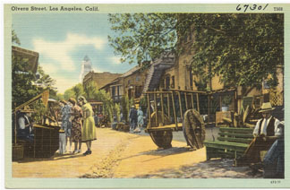 | 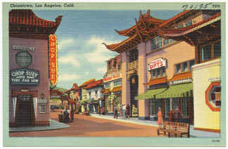 | 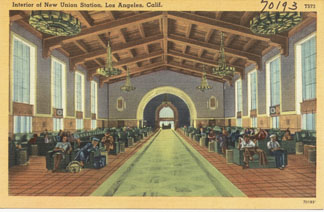 |
Olvera Street |
China Town |
Union Station |
Olvera Street is the birthplace of Los Angeles. Here you will experience old LA architecture and charm while shopping in the open marketplace. You can rest your tired feet while enjoying Mariachi music and delicious food at any of its fine restaraunts. |
China Town is a great place to experience the Chinese culture. Here you may find many trinkets with a Chinese style of art. You can try their delicious food, or take a walk around to enjoy the sights. |
Union Station is a cool place to visit. There are many trains and Metro subways pulling in and out of it. If you want, hop on a Metro to ride around LA. You never know, you might discover something new. |
Hollywood and Vicinity |
||
| 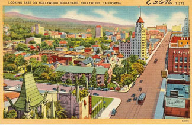 | 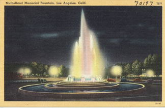 | 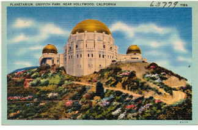 |
Hollywood |
Mullholland Fountain |
Griffith Observatory |
Hollywood is a great place to see sights, take pictures with characters, ride in the tour busses, and best of all it has lots of great food choices. Here you can catch up with friends, or if you go to the Hollywood & Highland Mall (easy access from Metro subway), you can see the Hollywood sign from there. |
The Mullholland Fountain, or the William Mulholland Memorial is a fountain dedicated to William Mulholland, the father of the city's water system. This park is a beautiful sight to see. |
The Griffith Observatory is an amazing observatory located near Downtown Los Angeles. It has many things to do in it, such as the giant telescope you can look through, go to exhibits, and lots of other things. For example, one one of the exhibits is a telescope where you can safely look at the sun. Another exhibit is the "Star Room," which is a room with a projector where you can look at the different stars. It may not sound like much, but it's pretty cool. |
Westside and Beaches |
||
| 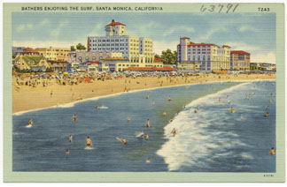 | 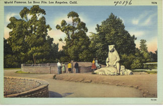 | 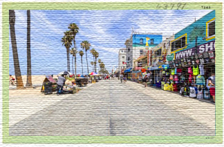 |
Santa Monica |
La Brea Tar Pits |
Venice |
Santa Monica is a great place to relax on the beach, or go to the pier to enjoy a nice sunset. There you can enjoy amazing food, and watch the ocean as you eat, or you can go and take a nice walk on the beach. There are many things to do on the beach. Go for a swim, catch up with friends, or rent a bike and ride along the beach. |
The La Brea Tar Pits are simply wonderful. Here, you can see all the different animal bones entrapped in the tar, and how they decayed over time. You can see a bunch of different exhibits, and it's just a really cool museum. |
Venice Beach is a great place to enjoy amazing times with family. At Venice, there is amazing food, great beaches, and beautiful waves. This is one of my favorite beaches I've ever been to. |
San Fernando Valley |
||
| 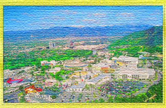 | 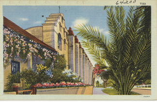 | 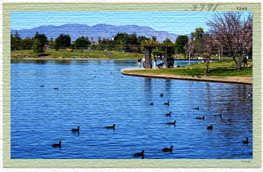 |
Universal Studios |
San Fernando Mission |
Lake Balboa |
Universal Studios is a fun place for people of all ages. Why not go and explore all the parts of The Wizarding World of Harry Potter, or go to ride the Transformers ride - a fun 3D ride. Or you could go to see the Minions. There are many things to do here. One of the best parts is the Universal Studios Tour, an engaging tour which covers a big chunk of the lot. |
The San Fernando Mission is a really cool place to learn about the different missions. You can see how it was built, and the life that people lived in them. They also have a pretty cool gift shop there. |
Lake Balboa is a really nice place to bike around, and have a picnic. Go relax and enjoy the nice Los Angeles weather while you're here. Just whatever you do - don't go swimming! |